Android 12.0_User’s Manual_V 1.3
Document classification: □ Top secret □ Secret □ Internal information ■ Open
Copyright Notice
The copyright of this manual belongs to Baoding Folinx Embedded Technology Co., Ltd. Without the written permission of our company, no organizations or individuals have the right to copy, distribute, or reproduce any part of this manual in any form, and violators will be held legally responsible.
Forlinx adheres to copyrights of all graphics and texts used in all publications in original or license-free forms.
The drivers and utilities used for the components are subject to the copyrights of the respective manufacturers. The license conditions of the respective manufacturer are to be adhered to. Related license expenses for the operating system and applications should be calculated/declared separately by the related party or its representatives.
Overview
This manual is designed to help users quickly familiarize themselves with the product, and understand the interface functions and testing methods. It primarily covers the testing of interface functions on the development board, the methods for flashing images, and troubleshooting procedures for common issues encountered in use. In the process of testing, some commands are annotated to facilitate the user’s understanding, mainly for practical use. Please refer to “OK3588–C_Android12 User’s Compilation Manual” provided by Forlinx for kernel compilation, related application compilation methods, development environment construction, etc.
The manual is primarily divided into five chapters:
Chapter 1. focuses on the overall overview of the product, and briefly introduces the development board in the interface resources, the relevant driver path in the kernel source code, and the description of the key parts of the information;
Chapter 2. mainly focuses on the fast booting of the product, which can be achieved through two methods: serial port login and network login, as well as the relevant introduction of the U-Boot menu;
Chapter 3. Android Function Test；
Chapter 4. focuses on the product’s image update, mainly describing the method of updating the image to the storage device, and users can choose the corresponding flashing method according to the actual situation;
Chapter 5. is mainly about the OTA upgrade test of the product system.
A description of some of the symbols and formats associated with this manual:
Format |
Meaning |
|---|---|
Note |
Note or information that requires special attention, be sure to read carefully |
üìö |
Relevant notes on the test chapters |
Ô∏èüõ§Ô∏è Ô∏è |
Indicates the related path. |
Blue font on gray background |
Refers to commands entered at the command line(Manual input required). |
Black font |
Serial port output message after entering a command |
Bold black |
Key information in the serial port output message |
// |
Interpretation of input instructions or output information |
Username@Hostname |
console: Development board serial port login account information, which can be used to determine the environment for function operation |
After packaging the file system, you can use the “ls” command to view the generated files.
forlinx@ubuntu:~/3588$ ls //List the files in this directory
OK3588-android-source OK3588-android-source.tar.bz2
forlinx@ubuntu: the username is forlinx and the hostname is ubuntu, indicating that the operation is performed in the development environment ubuntu;
//: Explanation of the instruction, no input required;
Ls: Blue font on a gray background, indicating relevant commands that need to be entered manually;
OK3588-android-source: Black font is the output information after entering the command; bold font is the key information; here is the packaged file system.
Application Scope
This manual is mainly applicable to the Android12.0 operating system on the Forlinx OK3588-C platform. Other platforms can also refer to it, but there will be differences between different platforms. Please make modifications according to the actual conditions.
Revision History
Date |
User Manual Version |
SoM Version |
Carrier Board Version |
Revision History |
|---|---|---|---|---|
01/12/2022 |
V1.0 |
V1.1 |
V1.1 |
OK3588-C Android12.0 User’s Manual Initial Version |
04/11/2023 |
V1.1 |
V1.1 |
V1.1 and Above |
1. Adding a description of flashing separate image in OTG flashing chapter; 2. Modifying maskroom flashing description. |
16/01/2024 |
V1.2 |
V1.1 |
V1.1 and Above |
Correcting the description regarding the OV5645; it now supports the OV5645 camera. |
21/03/2024 |
V1.3 |
V1.1 |
V1.1 and Above |
Adding CPU/GPU/NPU frequency description. |
1. OK3588 Development Board Description
RK3588 is a low-power, high-performance processor based on ARM64 architecture, which includes 4-core Cortex-A55 and 4-core Conrtex-A76 as well as independent NEON processor and neural network processor NPU, and it can be applied to computers, cell phones, personal mobile Internet, and digital multimedia devices.
Connection method is board-to-board, and main interfaces are shown in the figure below:
Front

Back
Note: This software manual does not describe the hardware parameters. Before referring to this manual for software development, please read the “OK3588-C Hardware Manual _ V1.0” under “Hardware Data/User Manual” (the download method is the same as the software data) to understand the product naming rules and the hardware configuration of the product, which is helpful for you to use it.
1.2 CPU/GPU/NPU Frequency Description
RK3588J industrial grade SoM frequencies are described below:
**Note: For the industrial-grade RK3588J SoM, to better test the maximum performance of this SOC, starting from version R4 and subsequent versions, the SoM in the user materials will default to operate in overclocking mode (Without performance requirements, it is recommended to modify it to the normal mode). **
Refer to “Rockchip RK3588J Datasheet V1.1-03/08/2023.pdf ”
Table 3-2 Recommended operating conditions
Maximum CPU A76 frequency, normal mode ① |
1.6GHz |
|---|---|
Maximum CPU A76 frequency, overclocking mode ② |
2.0GHz |
Maximum CPU A55 frequency, normal mode ① |
1.3GHz |
Maximum CPU A55 frequency, overclocking mode ② |
1.7GHz |
Maximum GPU frequency, normal mode ① |
700MHz |
Maximum GPU frequency, overclocking mode ② |
850MHz |
Maximum NPU frequency, normal mode ① |
800MHz |
Maximum NPU frequency, overclocking mode ② |
950MHz |
Normal mode indicates that the chip is operating at a safe voltage and frequency. For industrial environments, it is highly recommended to keep it in normal mode to reasonably ensure longevity;
Overclocking mode will bring higher frequency, and the corresponding voltage will also increase. Running in overclocking mode in a long time may shorten the chip’s life, especially at high temperatures.
To switch to “normal mode”, you need to add # include “rk3588j.dtsi” to the reference in the kernel device tree. The path is:
OK3588-android-source/kernel-5.10/arch/arm64/boot/dts/rockchip/OK3588-C-common.dtsi

RK3588 commercial grade SoM frequencies are described below:
Refer to “Rockchip RK3588 Datasheet V1.7-17/11/2023.pdf ”
Table 3-2 Recommended operating conditions
Maximum CPU A76 frequency |
2.2-2.4 GHz |
|---|---|
Maximum CPU A55 frequency |
1.8GHz |
Maximum GPU frequency |
1GHz |
Maximum NPU frequency |
1GHz |
1.3 Android12 System Software Resources Features
Device |
Location of driver source code in the kernel |
Device Name |
|---|---|---|
LCD Backlight Driver |
drivers/video/backlight/pwm_bl.c |
/sys/class/backlight |
USB Port |
drivers/usb/storage/ |
|
USB Mouse |
drivers/hid/usbhid/ |
/dev/input/mice |
Ethernet |
drivers/net/ethernet/stmicro/stmmac |
|
SD/micro TF card driver |
drivers/mmc/host/dw_mmc-rockchip.c |
/dev/block/mmcblk1pX |
EMMC Driver |
drivers/mmc/host/dw_mmc-rockchip.c |
/dev/block/mmcblk2pX |
OV13850 |
drivers/media/i2c/ov13850.c |
/dev/videoX |
LCD Controller |
drivers/gpu/drm/rockchip/rockchip_drm_vop.c |
|
MIPI CSI |
drivers/phy/rockchip/phy-rockchip-mipi-rx.c |
|
MIPI DSI |
drivers/phy/rockchip/phy-rockchip-inno-mipi-dphy.c |
|
LCD Touch Driver |
drivers/input/touchscreen/goodix.c |
/dev/input/eventX |
RTC Real Time Clock Driver |
drivers/rtc/rtc-rx8010.c |
/dev/rtc0 |
serial port |
drivers/tty/serial/8250/8250_dw.c |
/dev/ttySX |
Key Driver |
drivers/input/keyboard/adc-keys.c |
/dev/input/eventX |
LED |
drivers/leds/leds-gpio.c |
|
I2S |
sound/soc/rockchip/rockchip_i2s.c |
|
Audio Driver |
sound/soc/codecs/rk817_codec.c |
/dev/snd/ |
PMIC |
drivers/mfd/rk808.c |
|
PCIE |
drivers/pci/controller/pcie-rockchip.c |
|
Watchdog |
drivers/watchdog/dw_wdt.c |
|
SPI |
drivers/spi/spi-rockchip.c |
|
PWM |
drivers/video/backlight/pwm_bl.c |
1.4 eMMC Memory Partition Table
The following table is the eMMC memory partition information of Android operating system (the size of a block is 512bit when calculating):
Partition Index |
Name |
Offset / block |
Size/block |
content |
|---|---|---|---|---|
N/A |
security |
0x00000000 |
0x00004000 |
MiniLoaderAll.bin |
1 |
uboot |
0x00004000 |
0x00004000 |
uboot.img |
2 |
trust |
0x00008000 |
0x00002000 |
misc.img |
3 |
dtbo |
0x0000a000 |
0x00002000 |
dtbo.img |
4 |
vbmeta |
0x0000c000 |
0x00000800 |
vbmeta.img |
5 |
boot |
0x0000c800 |
0x0001b800 |
boot.img |
6 |
recovery |
0x00020800 |
0x00030000 |
recovery.img |
7 |
baseparameter |
0x001d8800 |
0x00000800 |
baseparameter.img |
8 |
super |
0x001d9000 |
super.img |
2. Fast Startup
2.1 Preparation Before Startup
The OK3588 development board has two system login methods, serial and network login. Hardware preparation before system startup:
12V2A or 12V3A DC Power Cable
Debugging serial cable
The debug serial port on the development board is a Type-C socket, allowing users to connect the development board to a PC using a USB to Type-C cable to monitor the status of the development board.

2.2 Debugging Serial Driver Installation
The debugging serial port of the OK3588 - C platform uses a Type - C interface. There is an on - board USB to UART chip, so there’s no need to purchase a USB to serial port debugging tool. It is extremely simple and convenient to use.
To install the driver, please use the driver package DriverAssitant_v5.1.1.zip provided in the User Profile \Android\Tools\ directory.
Run DriverInstall.exe directly after the unzipping is completed; in order to ensure the driver is the latest version, please unstall the driver first, then install again.
2.3 Serial Port Login
2.3.1 Serial Port Connection Settings
Note:
Serial port terminal login user: Serial port terminal automatically logs in root user without password;
Serial port settings: baud rate 115200, data bit 8, stop bit 1, no parity bit, no flow control;
Hardware Requirements: Type-C cable required to connect PC and development boards;
Software requirements: PC Windows system needs to install the super terminal software. Because the terminal software has many types, users can choose their familiar one.
In the following, we take the putty terminal software as an example to introduce the serial port login method:
Step 1: Connect the serial port number of the computer—check the serial port number from the device manager (Based on the port actually recognized by the computer );

Step 2: Open and set up putty, then set the“ line according to the COM port of the computer used, baud rate 115200;

Step 3: After the setting, input the COM port used by the computer in Saved Sessions. The following figure takes COM3 as an example, save the settings, open the serial port again later, and click on the saved port number;
2.3.2 Serial Login
After the terminal software on the PC side is set, connect the PC and the development board through the serial port cable, and power on after connecting the power supply. The startup information can be seen through the terminal software.
The following startup message indicates a successful start, allowing a new command line to be entered by pressing Enter:

2.4 Screen Switching
OK3588 supports various screen interfaces such as MIPI DSI, HDMI, eDP, DP, RGB, etc., and can simultaneously perform mirroring and independent display for up to four screens. Currently there are three screen switching methods: uboot menu dynamic control; kernel device tree designation; DisplayHwConfig application control.
OK3588 contains 4 display controllers, i.e. 4 VP. Supports up to 4 screens simultaneously. The maximum resolution of VP0 is 7680x4320; the maximum resolution of VP1 is 4096x4320; the maximum resolution of VP2 is 4096x4320; the maximum resolution of VP3 is 2048x1080.
2.4.2 Kernel Device Tree Specification
This method does not require the connection of a serial terminal, and the system image defaults to the desired configuration selection, which is suitable for mass production. However, we need to manually modify the device tree and regenerate the system image once again
Note: This method has higher priority than the uboot screen selection, and the uboot selection will not take effect after the device tree is modified.
The device tree path: kernel/arch/arm64/boot/dts/rockchip/OK3588-C-common.dtsi
In the kernel source code, open the device dtsi file and find the following node:
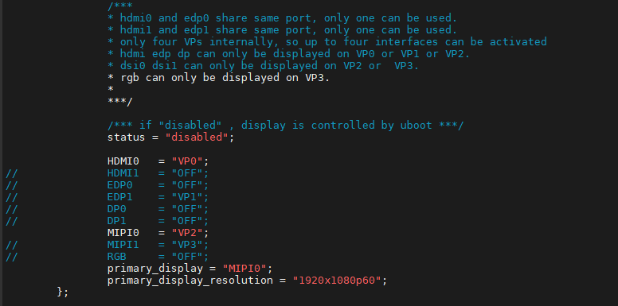
The node has a default disabled state and needs to be changed to an okay enabled node. Change according to screen requirements.
Parameter Description:
Meaning |
|
|---|---|
status |
Describe the node state: disabled is for off, okay is for on |
HDMI0 |
Specify the VP assigned to HDMI0 |
HDMI1 |
Specify the VP assigned to HDMI1 |
EDP0 |
Specify the VP assigned to EDP0 |
EDP1 |
Specify the VP assigned to EDP1 |
DP0 |
Specify the VP assigned to DP0 |
DP1 |
Specify the VP assigned to DP1 |
MIPI0 |
Specify the VP assigned to MIPI0 |
MIPI1 |
Specify the VP assigned to MIPI1 |
RGB |
Specify the VP assigned to RGB |
primary_display |
Specify the main screen display |
Users need to change the setting parameters as required. After saving, it is necessary to recompile and generate an image.
An annotated description of the node:
1. Both hdmi0 and edp0 use the same port, and only one of them can be used at the same time;
2. HDMI1 and EDP1 share the same port, and only one of them can be used at a time;
3. There are only four VPs internally, so a maximum of four interfaces can be activated;
4. HDMI, EDP, and DP can only be displayed on VP0, VP1, or VP2;
5. DSI0 and DSI1 can only be displayed on VP2 or VP3;
6. RGB can only be displayed on VP3.
So the optional parameters for HDMI0/1, EDP0/1, DP0/1 are “VP0”, “VP1”, “VP2”, and “OFF”;
MIPI0/1 optional parameters are: “VP2”, “VP3”;
The RGB optional parameter is: “VP3”;
The primary_display parameter depends on the actual display interface assigned to get the VP.
Note: When modifying the device tree, you need to follow the annotation rules to avoid using conflicts. The driver does not detect whether the forlinx-control configuration conforms to the rules. An error in the setting will cause abnormal display.
For the display interface set to “OFF”, blocking, deleting, or retaining is possible. It’s not necessary to set all four VP.
Examples:
Assign VP0 to HDMI0, VP1 to HDMI1, VP2 unused, and VP3 for RGB use. Set the main screen to HDMI0.
After saving, recompile to generate the image.
2.5 System Shutdown
In general, the power can be turned off directly. If there is data storage, function use, or other operations, avoid turning off the power arbitrarily during operation to prevent irreversible damage to the file. In such cases, only re-flashing the firmware can resolve the issue. To ensure that data is not completely written, enter the sync command to complete data synchronization before turning off the power.
Note: For products designed based on the SoM, if there are scenarios where accidental power loss causes the system to shut down unexpectedly, measures such as adding power-loss protection can be incorporated into the design.
3. Android Function Use and Test
3.1 Main Interface Display

3.2 Application
Swipe up on the main screen to bring up the following screen.

Note: After software version updates, there may be minor differences, which do not represent the actual images for each subsequent version update and are provided for reference only.
3.3 Language Setting
Click “ ”, on the application interface to enter the setting interface:
”, on the application interface to enter the setting interface:

Click application interface to enter the system interface.

Click “Language and input method” to enter the language setting interface:

Click “Language” to enter the language selection interface:
Click “Add Language” to add a new language.
If you want to remove an installed language, you can click the icon with three dots in the upper right corner, select Remove, check the language you want to delete, click the trash can icon in the upper right corner, and a dialog box pops up, “Do you want to remove the selected language?” Click “Confirm” to deleted the language.
3.4 Picture and Audio View
Store the picture and video files to be viewed into the TF card, and insert the TF card into the development board.
Click “ ” on the application interface to enter the TF card picture browsing interface.
” on the application interface to enter the TF card picture browsing interface.
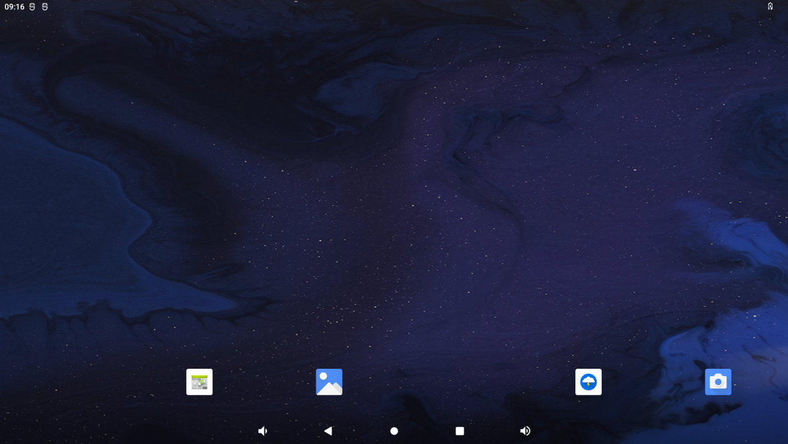
Configure permissions:

After configuration, enter the picture and video view:
Click on the pictures and videos to view:

3.5 Multimedia Test
Store the audio file to be played into the TF card, and insert the TF card into the development board.
Click “” in the application interface to enter the music player interface.

Click “” in the interface to enter the song list interface.
Click Play Music to enter the play interface.

The priority of sound playback is headphone > HDMI audio > carrier board speaker, and the volume can be adjusted by pressing the physical keys VOL + and VOL- on the carrier board of the development board.
3.6 Recording (Supports Mic Input)
Click the video “” in the application interface to enter the recorder interface:
Configure permissions:

Click the round button to start recording: (Note: the pointer will swing according to the sound level during normal recording).

Click the square button to stop recording, and finally click the done button to save.
Click the “ ” button below to display the previously recorded audio file.
” button below to display the previously recorded audio file.

Click on the audio file you want to play, and the recording will start playing.

3.7 Volume Adjustment
Click “ ”, on the application interface to enter the setting interface:
”, on the application interface to enter the setting interface:

Click “Sound” in the settings interface to enter the volume settings interface.

This interface allows you to adjust each section’s volume and supports media volume adjustment using the physical buttons VOL- and VOL+ on the base plate. The default alarm tone is Cesium. Click “Default Alarm Tone” to modify it.

3.8 Display Settings
Click “ ”, on the application interface to enter the setting interface:
”, on the application interface to enter the setting interface:
Click “Display” in the setting interface, enter the display setting interface, and select “Brightness” for the backlight setting, then the brightness adjustment slider will appear, adjust the brightness. Because the development board provided by Forlinx does not have a power sensing chip, the automatic screen rotation function in the advanced options does not work.

The default setting of OK3588 is to never turn off the screen. If you need to sleep and wake up, please click the “Screen timeout” option to select the sleep time.
Select screen sleep time.
If there is no operation on the interface within the set sleep time, the screen will enter the sleep mode, and pressing the PWRON physical button on the carrier board will wake up the screen.
3.9 Time Setting（RTC）
Click “ ”, on the application interface to enter the setting interface:
”, on the application interface to enter the setting interface:
Select “System,” where you can change the date and time, and even after power failure, the time can still be synchronized (ensure that the button battery is installed on the board).

The default is “Turn off network-provided time” and the time format is 24 hours.
Set the date and time separately：
Click on “Set Date.”

Click on “Set Time.”
3.10 Ethernet Test
OK3588 has two Gigabit NICs on board (Ethernet ETH0 and Ethernet ETH1).
Description:
When 4G and Ethernet exist at the same time, Ethernet is preferred by default; When 4G WIFI exists at the same time, WIFI is preferred by default. When both WiFi and Ethernet are present, Ethernet is prioritized by default.
1. Gigabit network port test:
Prepare a router and a network cable that can be connected to the external network port.
After inserting the network cable, click “” on the application interface:

Click “Network and Internet”:

Click “Ethernet ETH0” to choose to automatically obtain IP DHCP or static IP. DHCP is recommended. If you set a static IP, make sure your network parameters are available.
Click “Ethernet”:
The default IP acquisition method is “dhcp”. If you want to set a static IP, click “Ethernet” Ip mode:

Select Static for static IP configuration:

Click “CONNECT” to complete the configuration:
Click Lightning on the application interface for network test:

Enter “http://www.forlinx. net” in the domain name column and click “Start” to enter the official website of Forlinx.

3.11 WiFi Internet
Description:
When 4G and Ethernet exist at the same time, Ethernet is preferred by default; When 4G WIFI exists at the same time, WIFI is preferred by default. When both WiFi and Ethernet are present, Ethernet is prioritized by default;
When testing WiFi, unplug the wired network.
The OK3588 supports two modules onboard, the AW-CM276MA and the AW-XM458. Open Settings, select “Network & Internet”, and click “WLAN”:
Click “Use WLAN”:
Click on the WIFI to be connected and enter the password:
After successful connection, you can open the browser and enter the URL for network test:

3.12 WiFi Hotspot Test
OK3588 supports the sharing of Ethernet or mobile networks through WIFI for WIFI hotspot testing. First, plug the network cable into the OK3588 ETH0 connector. Open Settings and click Network and Internet.
Click “Hotspot &tethering”:
Click WLAN Hotspot:

Enable the WLAN hotspot and set the hot spot name and password:
First set the hotspot name:
Click “Confirm”.
Set hotspot password:

Click “Confirm”.
After connecting to the hotspot through the mobile phone, you can surf the Internet normally.
3.13 4G/4G Module Test
Description:
When 4G and Ethernet exist at the same time, Ethernet is preferred by default; When 4G WIFI exists at the same time, WIFI is preferred by default. When both WiFi and Ethernet are present, Ethernet is prioritized by default;
When testing 4G, unplug the wired network and turn off WiFi;
When using the 4G module, dial the S2 to ON, and when using the 5G module, dial to the other end.
The OK3588 carrier board supports 4G modules (EM05) and 5G modules (RM500U, RM500Q). Before the test, please power off the development board, connect the 4G/5G module and insert the SIM card (pay attention to the direction of the SIM card), and start the development board.
Open Settings, select “Network and Internet”, and click “SIM card”:

The default mobile network is on:
Link 4G is displayed in the drop-down menu for successful links.
After successful connection, you can open the browser for network test:

The test method of 5G is the same as that of 4G, and the difference is that the icon display is different:
3.14 Bluetooth Test
**Description: **
The current system does not support iPhone Bluetooth connection;
The Bluetooth function test of OK3588 platform uses the WiFi & Bluetooth integrated module, which supports the connection of Bluetooth devices as the main device to transmit/receive files.
The testing method is as follows:
Click “ ”, on the application interface to enter the setting interface:
”, on the application interface to enter the setting interface:
Click “Connected device” to enter the Bluetooth setting interface.

Click “+ pair with new device”, open PC Bluetooth to scan at the same time, and click the Bluetooth device to be connected.
Click “Pairing”, the mobile phone performs the corresponding pairing operation, and the interface of successful Bluetooth connection displays:


1. File transfer file test:
Accept the file:
The mobile phone shares photos to the OK3588 using Bluetooth; click “Accept” will start the outgoing.

The transfer progress will be displayed in the prompt bar, and you can view the picture after the transfer is completed.

2. File transfer test:
Click “ ” File Application to enter the file system interface.
” File Application to enter the file system interface.

Select an image and click the share button in the top right corner “”.
Send via Bluetooth.
Select the previously paired device, select the phone to receive the file, and the Bluetooth transfer will start.
You can view the transfer progress in the notification bar, and after the transfer is complete, you can view the received images on your phone.
3.15 Key Test (Sleep Wake-up)
There are 8 keys on the development board, including VOL +, VOL-, MENU, ESC, HOME, PWRON, RESET and Maskroom.
Key |
Function |
|---|---|
Recovery/VOL+ |
VOL+ |
VOL- |
VOL- |
PWRON |
Wake up from sleep and power on/off |
Maskroom |
Work with RESET to enter maskrom mode. |
RESET |
RESET |
MENU |
Pop-up menu Home screen settings, Widget, Wallpaper |
ESC |
Return |
The default factory setting is the non-hibernation state. At this time, press the PWRON key lightly to turn off the screen and enter the hibernation state (note that the carrier board cannot be inserted into the wake-up source such as USBOTG). The hibernation print information is as follows:
de345678INFO: PMU1_PWR_CON(0x1) PMU1_CRU_PWR_CON(0x2f) PMU1_WAKEUP_INT_CON(0x100)
PMU2_BUS_IDLE_ST(0x27fffff 0x0) PMU2_BUS_IDLE_ACK(0x27fffff 0x0) PMU2_PWR_GATE_ST(0x6fffffff 0x0)
PMU2_BUS_IDLE_CON(0x0 0xfd80 0xf007) PMU2_BIU_AUTO_CON(0xffff 0xffff 0x7)
PMU2_PWR_GATE_CON(0x0 0x9000 0x3)
PMU2_VOL_GATE_CON(0x7 0x0 0x3)
PMU2_QCHANNEL_PWR_CON(0x0) PMU2_QCHANNEL_STATUS(0xfe0007f)
PMU1_DDR_PWR_CON(0x747 0x747 0x747 0x747)
PMU1_DDR_PWR_SFTCON(0x900 0x900 0x900 0x900)
PMU1_PLLPD_CON(0xffff 0x3)
PMU2_DSU_PWR_CON(0x3)
PMU2_CORE_PWR_CON0(0x1 0x1)
PMU2_CORE_AUTO_PWR_CON0(0x0 0x0)
PMU2_CLUSTER_IDLE_CON(0x75)
INFO: PMU0_PWR_CON(0x0) PMU0_WAKEUP_INT_CON(0x0)
PMU0_DDR_RET_CON(0x0 0x0)
PMU1_GRF_SOC_CON2(0x7777) PMU0_GRF_OS_REGS9(0xf2acf6f4)
S
In the sleep state, press the PWRON key again to wake up the CPU. Press and hold PWRON to shut down the device
The other buttons have simpler functions, so please test them yourself.
3.16 TF Card and USB Storage Test
It is a test of TF card and USB storage device. Insert the USB device into the OK3588 USB Host port. The system will automatically detect the insertion of the USB flash drive.
Click “ ”, on the application interface to enter the setting interface:
”, on the application interface to enter the setting interface:
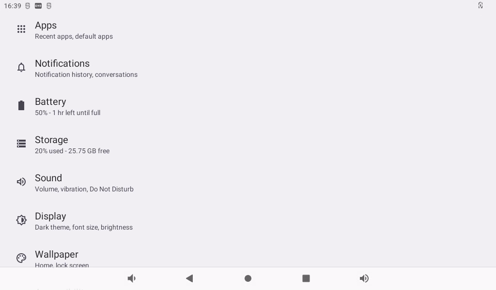
Click “Storage” to view the internal storage device and the inserted U disk device:

Click “MASS U disk” to view the contents of the U disk for reading and writing:
Click the “File”.
The TF card reading and writing method is the same as the U disk reading and writing test method. Insert the TF card into the TF card slot, and the system will automatically detect the insertion of the TF card. You can also view the contents of the TF card in the storage interface:
3.17 USB Mouse Test
Once the system is running, you can plug in a USB mouse into the USB host. You will then see the mouse cursor “ ”, within the interface, and you can navigate and operate the Android system using the mouse.
”, within the interface, and you can navigate and operate the Android system using the mouse.
3.18 USB OTG Interface Test
The OK3588 development board supports USB OTG functionality.
Typec0 of the development board is connected to the computer through the otg cable, and the computer will recognize the board as follows:

3.19 Serial Port Test
UART2, UART4, UART6, UART9, a total of four serial ports led out from the OK3588 carrier board; UART2 for debugging serial port, UART6 for Bluetooth serial port, and UART9 for 485 serial port. The default device names of UART4 and UART9 in the development board are ttyS4 and ttyS9 respectively. Take the test of UART4 serial port as an example, short-circuit the receiving and transmitting pins of UART4 according to the schematic diagram of the development board, corresponding to PIN7 and PIN10 respectively.

Open the serial port test program on the desktop .
.

Click the “SETUP” button:

Set serial port device, baud rate and display format:

Then click the “Loopback” option in the previous menu to perform the loopback test.

Click the “CONSOLE” option in the previous menu to perform the send-receive test:

3.20 Watchdog Test
Click “forlinux _ watchdog _ test” “on the application interface to enter the watchdog test:
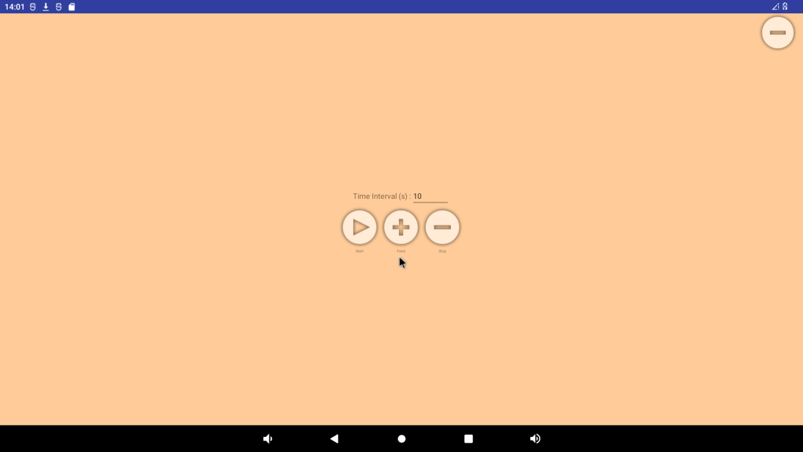
There are three buttons on the interface: “start”, “feed” and “stop”. Click “start” to see the dog and “feed” to feed the dog:
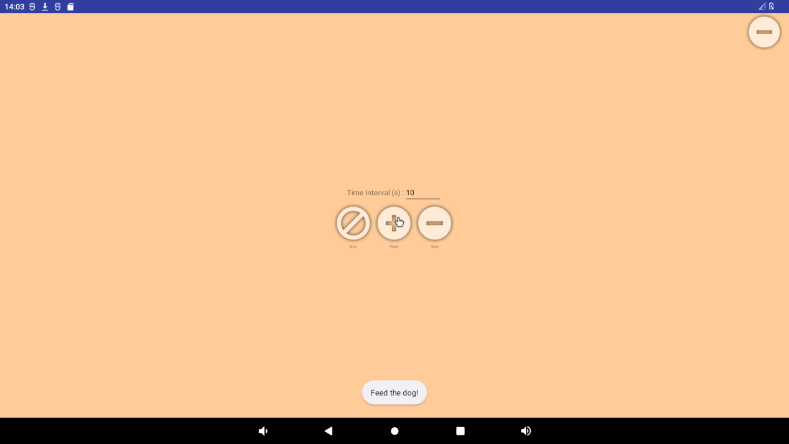
If a timeout (timeout of 10S) is not performed to feed the dog, the system reboots. Click “stop” to stop the watchdog test, and the system will not start:
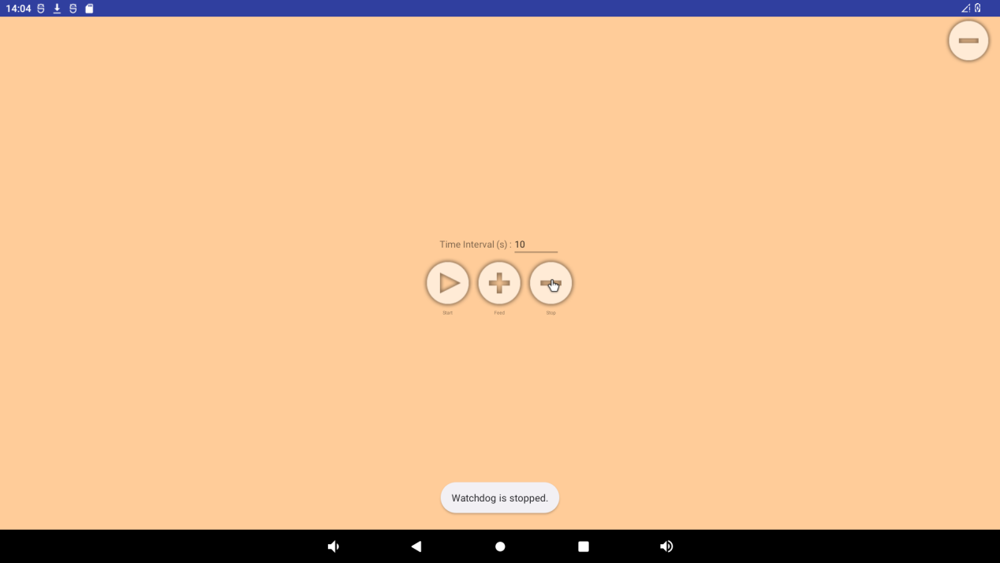
3.21 Camera Test
3.21.1 UVC Camera Test
Click on the camera in the application interface:

Configure permissions:


Enter the preview interface and click the photo button on the right to take a photo:
Swipe the screen to the right to open the options for switching between photo and video mode, as well as accessing settings.

Tap on the settings button in the top right corner to adjust settings such as resolution and image quality.

Click the video button to enter the video preview interface:
Click the video button to record the video:

3.21.2 OV13850 Camera Test
OK3588 supports 5 x mipi Camera, in which CAM1 and CAM2 are used for OV13850 and CAM3, CAM4 and CAM5 are used for MIPI OV5645.
Please power off first, plug in two OV13850 Cameras, and power on to start.
Click on the camera in the application interface:

Configure permissions:


Enter the preview interface and click the photo button on the right to take a photo:
Swipe the screen to the right to open the options for switching between photo and video mode, as well as accessing settings.
Tap on the settings button in the top right corner to adjust settings such as resolution and image quality.
Click the video button to enter the video preview interface:
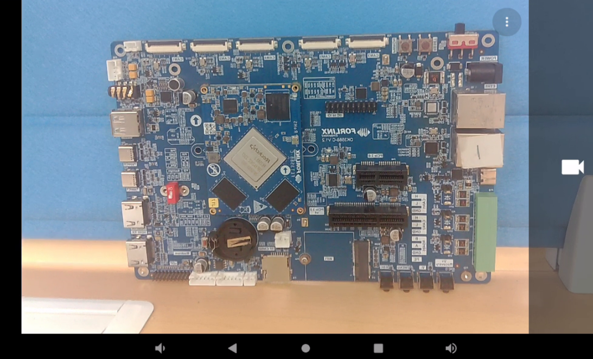
Click the video button to record the video:

3.22 HDMI Resolution Setting Test
OK3588 platform supports dynamic setting of HDMI resolution.
Click “ ”, on the application interface to enter the setting interface:
”, on the application interface to enter the setting interface:

Click “Display”, select “Advanced”, and click “HDMI” to configure HDMI:

You can dynamically select the desired resolution based on the resolution supported by the current HDMI screen:
After restarting, the device will take effect.
3.23 Factory Reset
The OK3588 platform supports restoring factory settings.
Click “ ”, on the application interface to enter the setting interface:
”, on the application interface to enter the setting interface:

Click “System”:

Click “Reset option” and select “Clear all data (restore factory settings)”:
Then click “Clear All Data”.
Wait for OK3588 to restore the default factory settings. Please do not power off during the process of restoring the factory settings.
3.24 APK Installation with TF Card
After loading the TF card according to the previous steps, you can see an APK file after entering the TF card directory.


Double-click the APK file to install and configure permissions:
Click “Install” to complete the installation:


3.25 WiFi ADB Test
Note: Only one of USB ADB and WIFI ADB can be used at the same time.
Follow the previous section to connect to WIFI, click “ ” after successfully connecting to WIFI:
” after successfully connecting to WIFI:
Click on “About Tablet”:
Continuously click the “version number” prompt to enter the development mode:
Return to the previous layer and select “System” in the setting interface:

Select the developer option, turn off “USB Debugging” and turn on “Wireless Debugging”:

Record the IP address and port of the current WIFI

Open the window command control window and enter “adb connect 192.168. 1.61: 43985” to connect to wifi:
Type “adb devices” to see the connected devices. Enter “adb shell” to access the device terminal.
Type “adb disconnect” to disconnect, and then type “adb devices” to see the devices.
3.26 ROOT Permission Test
Follow the previous sections to enter developer mode.

Click “Root Authorization” to restart the OK 3588 board.
️Path: OK3588-C（Android）User Profile\Android\Tool\RootChecker.apk
Copy the RootChecker. Apk to any directory, open a window command window, and use ADB to install the RootChecker. Apk.
Slide to click the RootChecker icon “”, on the OK3588 and click “BUTTON”.
3.27 Navigation Bar and Dropdown Bar Settings
The current version supports showing/hiding navigation bar and slide bar.
Follow the previous sections to enter developer mode.
Select “Allow navigation bar to be hidden” and “Allow top slide bar to be hidden”.
Restart OK3588.

Block the navigation bar, top slide bar, and right mouse button for the return function.
3.28 DisplayHwConfig Test
DisplayHwConfig can set the screen display and android system configuration. Click “” program in the application interface to enter the program for display setting.
The program has three screens, the main screen, the secondary screen, and the ANDROID system configuration.
In the main screen interface, VP can be assigned to different interfaces according to the following rules. You can also specify which interface is the home screen.
The secondary screen interface will show those previously displayed as secondary screen interfaces.
In the ANDROID system configuration interface, you can configure “modify root permission”, “allow the navigation bar to be hidden”, and “allow the sliding bar to be hidden”.
Check “Modify root permission”. After restarting, other users can also obtain root permission in the terminal.
Check “Allow the navigation bar to be hidden” and “Allow the sliding bar to be hidden”. After restarting, the system interface will not display the navigation bar and the sliding bar.
3.29 Artificial Intelligence Test
OK3588 android platform supports tensorflow lite and other mainstream AI frameworks. TFL Detect is used here to test target detection routines for customer reference. Routines such as accessories need to be installed by yourself.
The TFL Detect test routineis the official routine of tensorflow lite, which can run directly on the OK3588 platform without modification. It mainly uses the computing performance of the A-core, which occupies relatively high CPU, but it can often achieve higher detection frame rate by using multi-wire.
Test by placing the item in front of the camera will automatically recognize the item.

3.30 Locking Screen Test
Note: By default, Android will not lock the screen when it is started for the first time. If it is not modified, it will be opened in the lock screen state after restarting.
OK3588 does not lock the screen by default. If you need to lock the screen, you can modify it through Settings-> Security-> Screen Lock, as follows:
Under Screen Lock, you can specify how to lock the screen.
3.31 NPU Test
OK3588 The current test NPU examples are: rknn_mobilenet_demo_Android, rknn_ssd_demo_Android, and rknn_multiple_input_demo_Android, respectively, and the test routines are located at:
️Path: OK3588-C（Android）User Profile\Android\Program\rknpu.tar.bz2
Here is an example of rknn_ssd_demo_Android to test the NPU:
Open the window comman

Enter the following command to upload the test routine to the development board file system.
adb root
adb push rknpu.tar.bz2 /data/
adb shell
cd /data
tar xvf rknpu.tar.bz2
Then enter the following command to test
cd /data/rknpu/rknn_ssd_demo_Android/
Run the rknn_ssd_demo as follows:
chmod +x rknn_ssd_demo
export LD_LIBRARY_PATH=./lib
./rknn_ssd_demo model/RK3588/ssd_inception_v2.rknn model/bus.jpg
Pull the out.jpg file from the current directory to any directory in the window via adb.
adb pull /data/rknpu/rknn_ssd_demo_Android/out.jpg .

Open the out. jpg file by using the diagram viewing software

3.32 Hdmi rx Test
OK3588 HDMI RX supports resolutions up to 3840x2160 @ P60 and 4096x2160p @ P24.
After plugging in the HDMI cable,open “” Live TV in the application interface.
3.33 Forlinx-SDK Test
Forlinx provides a test application to demonstrate how to use some functions on the board.
The path of the test application is:
️ Path: OK3588-C（Android）User Profile\Android\Program\Forlinx-SDK.apk
You can install it manually through the file manager via USB flash drive or TF card, or use the following adb command for installation.
adb install Forlinx-SDK.apk
After installation, click “Forlinx-SDK” in the application interface to enter the program.
The content is shown in the figure below. The Forlinx-SDK program provides the test demo of serial port, SPI, I2C, GPIO, WATCHDOG, ADC, CAN, etc. These are described in turn below.
3.33.1 SERIAL PORT DEMO
Click “SERIAL PORT DEMO” “to enter the serial port test interface.
Device: Select the serial port to be tested.
Baud Rate: Select the baud rate of the serial port.
Data Bits: Specify serial port data bits.
Data Bits: Specify serial port stop bits.
Connect TX, RX of the corresponding uart4 serial port on the OK3588 development board (pin positions as shown in Figure 1 3.19 Section).
After setting the above contents, click the OPEN button to start the test
Display the set serial port information in the Status column.
Add the content to be sent in the Received Data column, and click SEND to send data.
Send data will be received in the Send Data column. Click CLEAR to clear the received data in the Send Data column.
3.33.2 SPI DEMO
Click “SPI DEMO” “to enter the SPI test interface (no SPI test interface is reserved on the 3588 board).

Device: Specifiy the SPI to use.
SPI Mode: Specify one of the four modes.
Bit order: Specify one of 1 (LSB), 0 (MSB).
Bits: Specifiy the number of bits in the data.
Speed: Specify the transmission rate in the range of 10-1000000.
After the above is set, click OPEN to start the test. Connect the miso and mosi pins of the selected spi on the OK3588.
Enter the data to be sent in the Sent Data field and receive the sent data in the Received Data field.
3.33.3 I2C DEMO
Click “I2C DEMO” to enter the i2c test interface.

The RTC chip is connected to the I2C, and clicking the READ button will read the time in the RTC register.
Fill in the time in the columns of Year, Hour, Minute, and Second, and click the WRITE button to write the data into the corresponding registers of the RTC.
3.33.4 GPIO DEMO
Click GPIO DEMO “ to enter the gpio test interface.
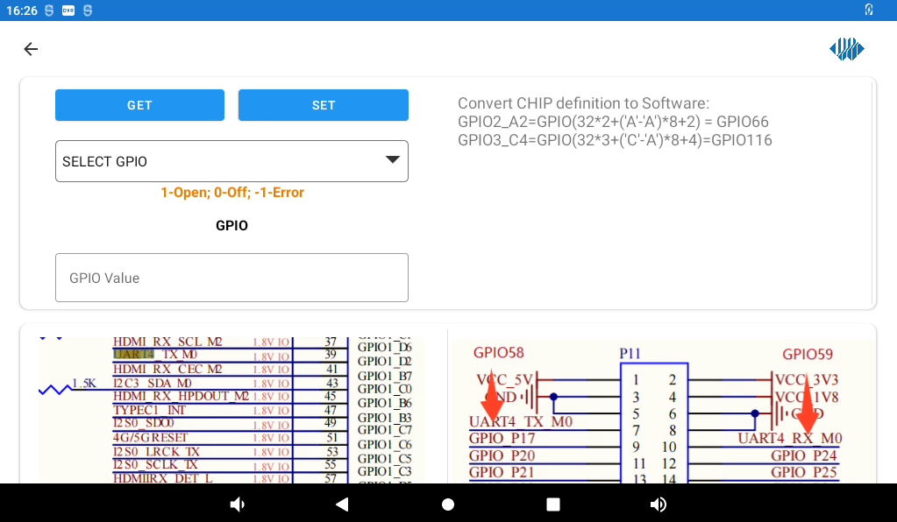
The formula in the upper right corner of the above figure, is the method of calculating the gpio serial number.
Select GPIO in the drop-down bar, click the GET button, and get the high level 1 or low level 0 in the GPIO Value bar.
Enter a 1 or 0 in the GPIO Value field and click the SET button to set the GPIO output high or low specified in the drop-down field.
3.33.5 WATCHDOG DEMO
Click “WATCHDOG DEMO” to enter the Watchdog test interface.

Clicking the START button will start the watchdog and start a 15-second countdown, when the countdown reaches 0, the device will reboot.

Turning on Auto Feed will enable automatic dog feeding; clicking on MANUAL FEED “will manually feed the watchdog once. Clicking the STOP button will stop the watchdog.
3.33.6 ADC DEMO
Click “ADC DEMO” to enter the adc test interface.
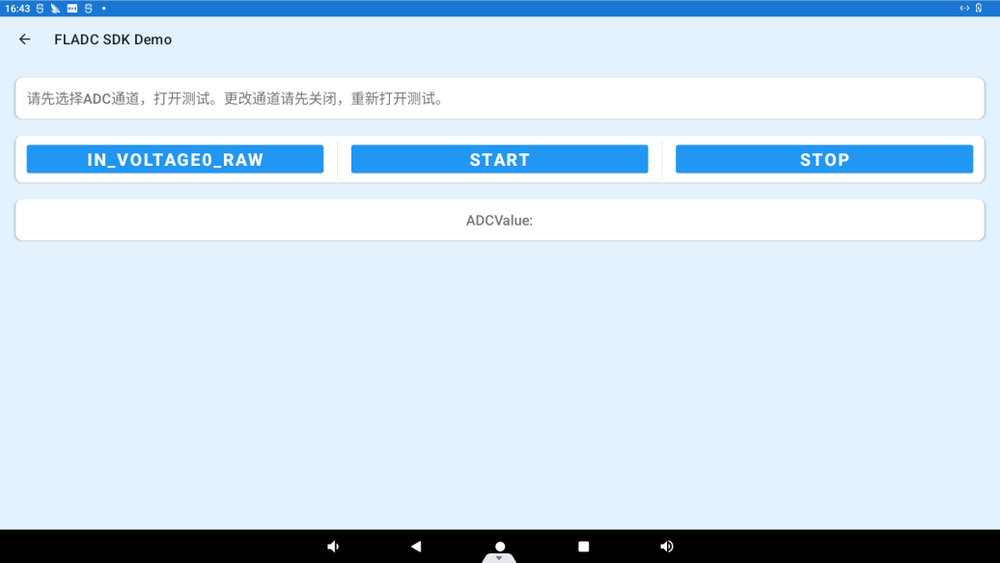
Click IN_VOLTAGE0_RAW to select the ADC channel, click the START button to start the test, the ADC value will be displayed in the “ADCValue” column.

Click “STOP” to stop the test:
3.33.7 CAN DEMO
Click “ ”, on the application interface to enter the setting interface:
”, on the application interface to enter the setting interface:
Click on “Network and Internet” to enter.
Click “Controller Area Network” to enter the can setting interface. Set the mode and use frequency of the two can in this interface.
Open the “Forlinx-SDK” application and click CAN DEMO to enter the can test interface.
Device: Specify the can interface to test.
CAN Data Format: Specify the format of data transmitted by can, hexadecimal or character.
Click the OPEN button to start the selected can interface.
Short-circuit can0 and can1. Enter “candump can1” in the command line to receive data, write the data to be transmitted in the Sent Data column, click the TRANSFER button to send the data, and the command line will receive the sent content. Enter “cangen can1” on the command line, and the Received Data column will display the received data.
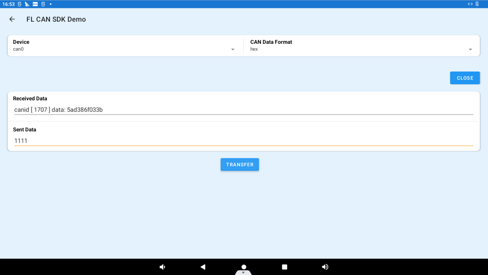
4. System Flashing
4.1 OTG System Flashing
4.1.1 OTG Driver Installation
️Path: OK3588-C（Android）User Profile\Android\Tool\DriverAssitant_v5.11.zip
Extract the above path file to any directory and run it with administrator privileges
Open DriverInstall.exe

Click “Driver Installation”

4.1.2 OTG Flashing Test
4.1.2.1 RKDevTool Flashing Test
Path: OK3588-C（Android）User Profile\Android\Tool</font>RKDevTool_Release_v2.84.zip
It is a development tool provided by Rockchip Micro. Unzip it to a full English path before use, connect the Typc0 port of the development board and the host computer with a Type-C cable, press and hold the recovery key of the development board and don’t release it, then press the reset key to reset the system, and release the recovery key after about two seconds. There will be prompts on the Rockchip development tool : loader device found
Note: The operation to recognize the device is that the recovery button should be in the pressed state when the development board is powered on. Theoretically, Rockchip development tools have no requirements for the unzip directory. However, some users have feedback that the unzip directory should be in full English. If the tool doesn’t match the following figure, please consider unzipping it in an English directory.
Open the Rockchip development tool:
Click the “Upgrade Firmware” tab, click the “Firmware” button to select the full upgrade image update.img. The program will be parsing the firmware, so wait a while.
Click the “Upgrade” button to upgrade.
Introduction to MASKROM mode
If the loader is damaged and cannot enter the Loader mode, press and hold the red Maskrom key and then press the reset key to enter the maskrom mode for flashing.
At this time, the system will prompt the discovery of a maskrom device. The flashing process is consistent with the loader mode, so it is best to use an update.img burning.
Note: Don’t click “Device Partition Table” in maskrom mode, it is invalid. A separate burn in maskrom mode will not clear the UBOOT environment variables.
Introduction to Downloading the Individual Image Function
This feature is useful when you need to download a separate image. This function is only applicable in loader flashing mode.
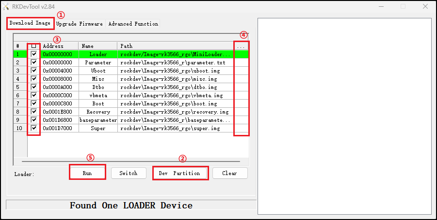
Click ① Download image tab
Click ② Device partition table to read the mirror partition location
Click the ③ check box to select the image to be flashed separately
Click ④Here to select a image
Click ⑤ to execute for flashing
Restart after flashing.
4.1.2.2 Factory Tool Flashing Test
Factory Tool is a factory batch OTG flashing tool, which does not need to read the image and supports large file flashing. Use this tool if RKDevTool is not compatible. Before use, you need to decompress to the full English path, connect the development board to the host, press the recovery key, press the reset key to reset, and release the recovery key after two seconds. There will be prompts on the Rockchip development tool : loader device found
Note: The operation to recognize the device is that the recovery button should be in the pressed state when the development board is powered on. Theoretically, Rockchip development tools have no requirements for the unzip directory. However, some users have feedback that the unzip directory should be in full English. If the tool doesn’t match the following figure, please consider unzipping it in an English directory.
Open the Rockchip development tool:
Click to select the firmware, and click to start. At this time to recognize the loader device will automatically start burning.
4.2 TF Card Flashing
TF card production, flashing and testing
Note: The tested TF card capacity is up to 16G, using 32G and above TF card may fail to burn.
Copy SDDiskTool_v1.69.zip from the user profile tools directory to any directory on windows. Run SD_Firmware_Tool.exe with administrator privileges.
Select the disk device, check “Firmware Upgrade” and select update.img. Click Start Creating.
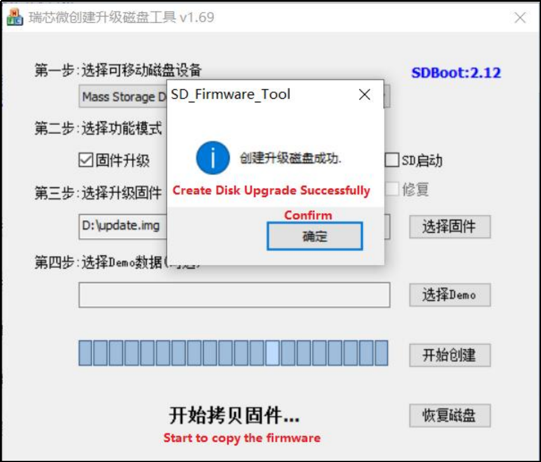
Insert the TF card into the development board and start, the system will automatically enter the flashing process. When the flashing is complete, both the screen and the serial port will prompt:
Please remove SD CARD!!!, wait for reboot.
At this time, pull out the TF card, the system automatically restarts (please do not power down directly).
During mass production, check the flashing status by SoM heartbeat light. Heartbeat light modes are as follows:
Kernel startup phase: Heartbeat light mode, regular intermittent flashes.
Flashing preparation phase: EMMC indicator light, off.
Flashing in progress phase: EMMC indicator light, on.
Flashing completion phase: Heartbeat light mode, regular intermittent flashes.
Serial port information during the burning process:
If the automatic restart does not occur after removing the TF card, a manual restart can also complete the burning. Please be patient during the burning process.
5. System OTA Upgrade Test
OTA (over the air) upgrade is a standard software upgrade method provided by Android system. It has powerful functions, and the current version of system OTA upgrade provides two methods of local complete package upgrade and network upgrade.
5.1 OTA Upgrade Package Compilation
The OTA upgrade package can be compiled by using forlinx.sh under OK3588-android-source file, please modify the android code first, then compile the OK3588 system upgrade package:
Note: Before compiling the OK3588 system upgrade package, make sure that the source code has been fully compiled using the./forlinx. Sh all command.
forlinx@ubuntu20:~/OK3588-android-source$ ./forlinx.sh ota
Compilation process is too long, please be patient. Compilation completed firmware directory: rockdev/Image-ok3588_c/update.zip
5.2 OTA Local Upgrade
Copy the update.zip generated in the previous section to the root directory of the USB or TF card, or the /data/media/0/ directory, the system will automatically detect the upgrade package and pop up the upgrade dialogue box.
The following is done in adb mode:
adb root
adb remount
adb push updata.zip /data/media/0/
After waiting for a while, the interface prompts whether to install the upgrade package window.

Click “Installation”.
The debugging window prints the following information:

After that, it will automatically restart and enter the Recovery system to automatically complete the OTA package upgrade. At this time, it cannot be powered off and wait for the upgrade.
When completed, it will automatically restart to the main Android interface.
After the system restarts, a dialog box pops up on the interface to prompt congratulations on the success of the upgrade.
Click “Yes”.
Finally, you can verify that the android system has been modified.
Note: The prompt for firmware upgrade operation after the system reboot is the correct prompt because the file /data/media/0/update.zip exists, so it will wait for a few minutes to pop up the prompt. The Firmware Prompt dialog will not pop up after deleting the/data/media/0/update.zip.
5.3 OTA Network Upgrade
1. Environment Setup
Edit the device/rockchip/rk3588/device.mk file and change the server IP address via ro.product.ota.host
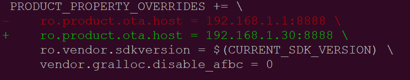
Execute . /for Linux.sh ota to compile the upgrade firmware, which is located at rockdev/Image-ok3588_c/update.zip.
Extract apache-tomcat-7.0.29.tar.gz to PC Ubuntu home directory, copy update.zip to /home/forlinx/apache-tomcat-7.0.29/webapps/OtaUpdater/WEB-INF/packages/ ok3588_c/1.0.0/1.0.1.zip
Enable apache-tomcat
cd /home/forlinx/apache-tomcat-7.0.29
./bin/startup.sh
Disable apache-tomcat
./bin/shutdown.sh
2. Network Upgrade Test
Connect network and power up OK3588 board, and the prompt dialog box will pop up to prompt system upgrading.

Click “Yes”, the upgrade 1.0.1.zip file will be downloaded via http protocol.
The system will restart automatically, and the serial port terminal will print as follows:
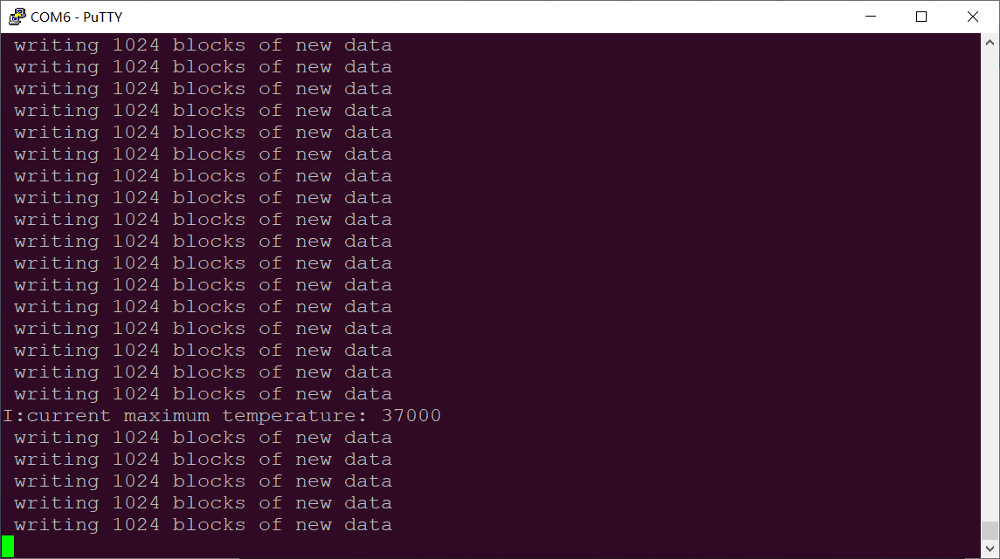
After this reboot, the android interface prompts that the upgrade is complete.
Click “Yes”.
Note: If prompted to upgrade again, click “No”, because OK3588 can get the remote 1.0.1.zip upgrade package through the network, so it will remind you whether you need to upgrade or not.